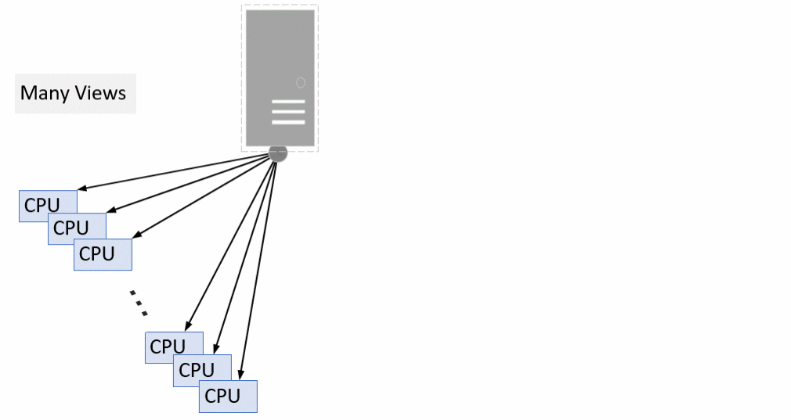

Tempus License Options for Concurrent MMMC (CMMMC)
The following are the Tempus license requirements in CMMMC mode:
- When 'N' views are combined into a single STA job on a single machine, the following licenses are required:
- More CPUs enabled by checking out more L (8), XL (16), or MP (16) licenses
- Minimum configuration: 1/2/3 XL or 1(L + ECO)
Figure -3 CMMMC license requirements

Related Topics
- Tempus License Options for Single View Distributed STA (DSTA)
- Tempus License Options for Distributed MMMC (DMMMC)
- Tempus License Options for CMMMC in DSTA Mode
Return to top